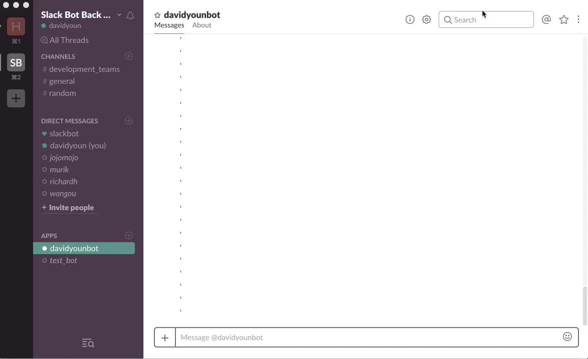

Many companies use Slack to communicate, and Google Calendar to share schedules.
I wanted to combine those two.
So people no longer have to talk about meetings on Slack, and then send invitations through Google Calendar.
How convenient?
Setting a reminder

Scheduling a meeting